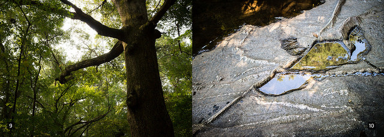
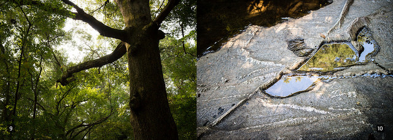

"Proximity To Nature: 20 Photos from 20 Intown Atlanta Forests" is a 5"x7" photo book. These photos are representations of 20 of Atlanta's urban forests. Each of these photos were taken within six miles of 5 Points, Atlanta's geographical center. The Table of Contents names and locates the forests within this radius. Come with me, and let's explore these woods together. And if you enjoy them, go explore in person!

You can purchase the book online at Storenvy.

You can purchase the book online at Storenvy.